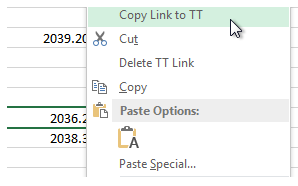
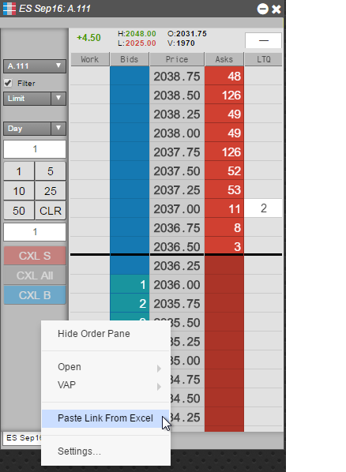
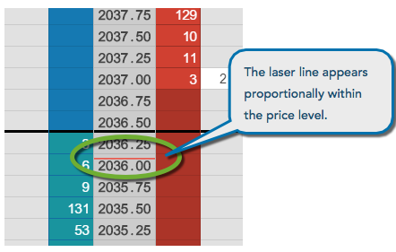
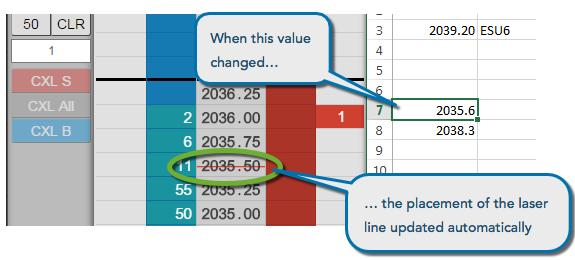

MD Trader lets you add laser lines to the price ladder that provide visual cues for prices you consider important. When you paste a link from an Excel spreadsheet into MD Trader, a laser line appears at the approximate value of the link in relation to the price level. For example, suppose you use an Excel spreadsheet to calculate a set of theoretical prices that you want to use in your trading strategy. By adding laser lines at those values, you can monitor when the market approaches your theoretical price.
Tip: If you paste links from Excel and save the workspace, the links will be preserved and then restored when you re-open the workspace.
To add laser lines to MD Trader:
In the Excel spreadsheet, right-click on the cell containing the price you want to use as a laser line and select Copy link to TT.

Open an MD Trader widget for the desired instrument, if it is not already open.
From the MD Trader context menu, select Paste Link From Excel.

A red laser line appears in the price ladder proportionally within the price level associated with the value in the spreadsheet cell.

To verify the value is linked correctly, change the value in the linked cell in the spreadsheet, in this case to 2035.6. The laser line automatically moves the to the new location in the price ladder.

To remove Excel links from a widget:
In the widget field linked to Excel, right-click to display the context menu.
Select Unlink from Excel.